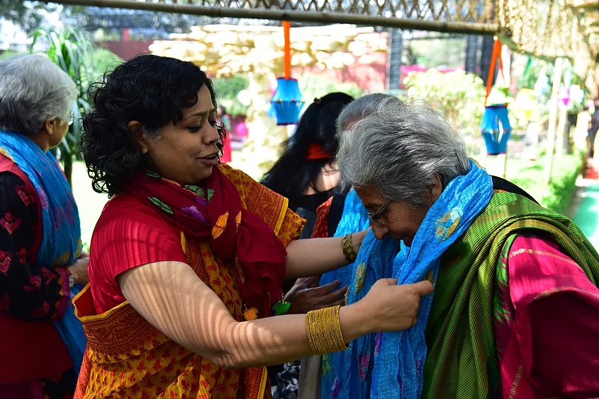
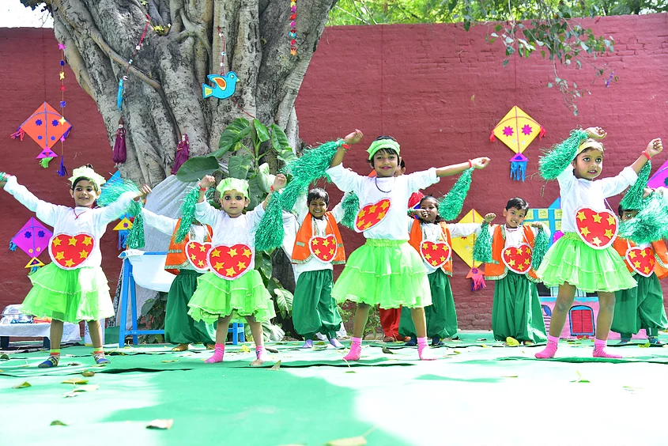
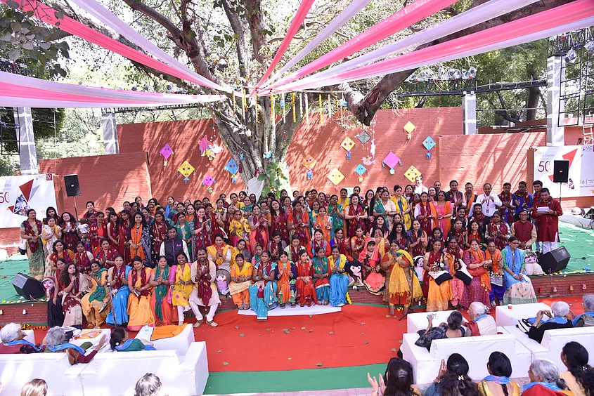

May 3, 2019|MC Team,
A bright sunny morning, on 16th March, heralded the culmination of 50 years of MC’s determined efforts to bring the nation’s spotlight on its youngest citizens. More than 300 guests – crèche alumni, current and past team members, youth group alumni, partners, volunteers, donors, governing members, believers and co travellers – spanning five decades of this glorious journey joined together at Sangeet Natak Akademi, New Delhi. It was an occasion to retrace our journey, rekindle the passion for our purpose and reaffirm the values that have been the guiding force of this organisation.
Congratulations on 50 years of caring for young children. India is stronger. Thanks to you. I wish you another 50 years of Impact! Karlee Silver, CEO, Grand Challenges Canada
The venue was a riot of colours: Guests were welcomed with a bandhaniduppata draped around their shoulders, as a badge of honour, symbolising the decade they joined the MC caravan; the entrance way came alive with photo collages of our children and landmark buildings and events, depicting the 50-year journey; the amphitheatre with its imposing banyan tree was festooned with paper mobiles recreating the interiors of a typical MC centre! The old and the new connected and their joy knew no bounds: Holi had indeed come early!
Our little children from the centres led the celebrations as mascots for the new world they would like to grow in, reminding us our responsibilities towards them.
Kamla Bhasin, activist and long-time believer in the work of MC, ignited the pride in our work, yet set the tone of urgency for working much harder to create a world where the poorest young child blossoms in a society of equal opportunities! Many team members immersed themselves in the mood of the occasion, displaying their talents through music, dance, theatre, compering - giving reasons to our guests to laugh a lot, tear up a bit, and bond with their MC family. Behind the preparations for this celebratory day, was the frenetic experience of putting together Buland Awaz, Nayi Parwaaz, a publication capturing the story of MC, over its 50 years. More than 150 personal stories of employees past and present, governing body members and other co-travellers retell the story of MC, the institution. A timeline of transformative events runs through each page, reminding us of the vision, purpose, successes, failures and faith that have kept MC and its people on course. It was only befitting that on its 50th anniversary, every employee is applauded, feted and shown gratitude for their years of untiring, dedicated work in for young children, in their unique ways.
All current members of the MC Team and all friends present went away with a memento to remember the occasion. It was a day of hope, optimism and steadfastness to reimagine a new world for our youngest citizens. Relive the moments of this grand celebration through the pictures here: